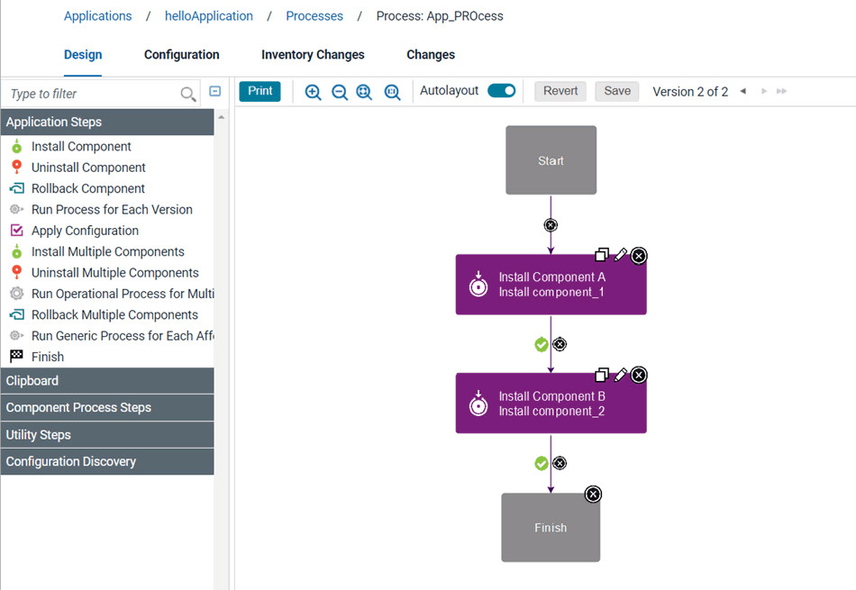

Deploying components in an application process
You can deploy one or more components in an application process by calling component processes.
Before you begin
- Create an application and add one or more components to the application.
- Create an application process.
- Create a component process of the Deployment type for each component. Important: If Deployment is not selected for Type, the deployment process will not succeed.
Procedure
-
In an application process, add the Install Component step to the process, and click the edit
icon
 . The Edit Properties window opens.
. The Edit Properties window opens.
Example
Install Component A and Install Component B steps call the deployment processes
for each component.